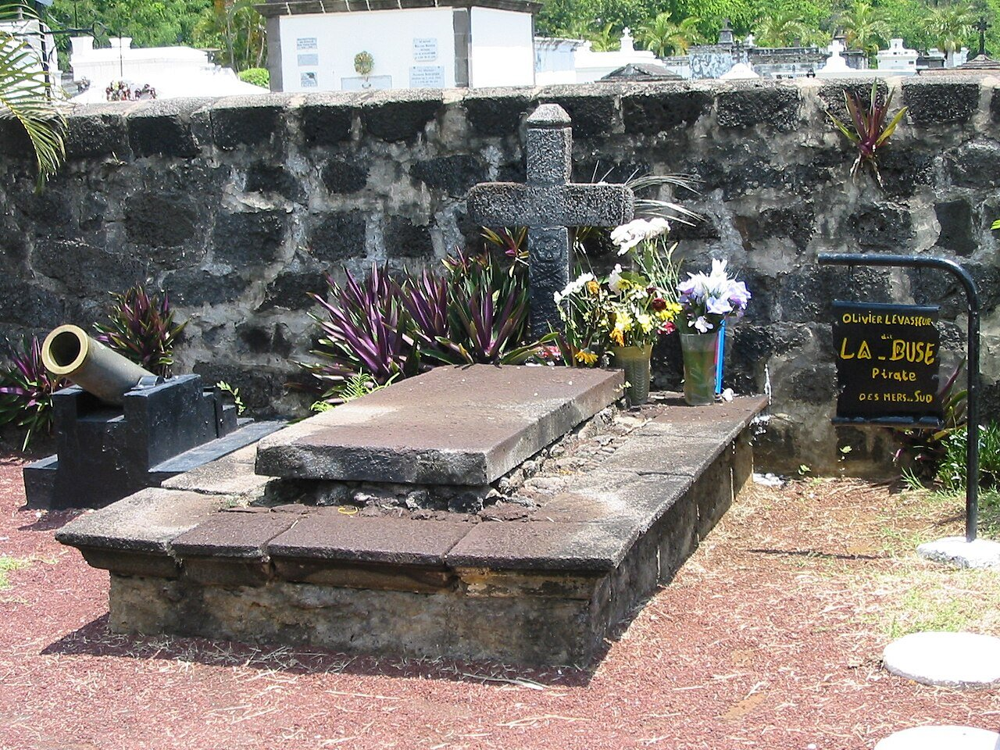
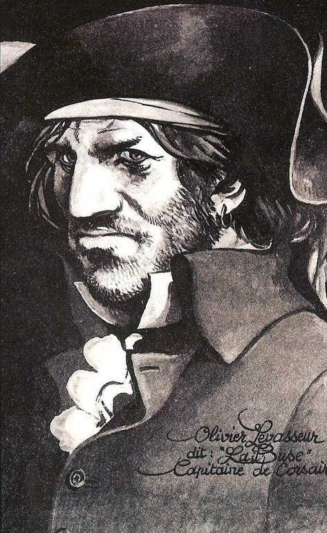
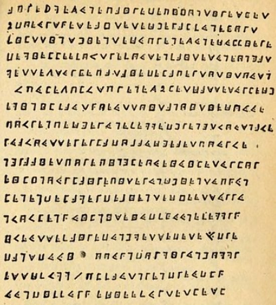

Dit "La Buse" — le plus célèbre pirate de l'océan Indien, dont le trésor codé hante encore les ravines de l'île.
Olivier Levasseur, né vers 1688 probablement à Calais, commence sa carrière comme corsaire du Roi pendant la guerre de Succession d'Espagne. Une fois la paix signée, il choisit de hisser le pavillon noir et devient "La Buse" — un surnom dû à la vitesse et la brutalité avec laquelle il fond sur ses proies, à l'image du rapace.
Après avoir écumé les Caraïbes et les côtes africaines, il met le cap sur l'océan Indien, zone stratégique où croisent les riches navires des Compagnies des Indes orientales. C'est là, entre Madagascar et l'île Bourbon (ancienne Réunion), que son destin va définitivement basculer dans la légende.
Arrêté à Sainte-Marie de Madagascar après des années de traque, il est conduit à Saint-Paul pour y être jugé et pendu le 7 juillet 1730, laissant derrière lui l'une des énigmes les plus fascinantes de l'histoire maritime mondiale.



En avril 1721, associé au pirate anglais John Taylor, La Buse réalise la prise la plus fructueuse de toute l'histoire de la piraterie. Au large de l'île Bourbon, ils s'emparent de la Nossa Senhora do Cabo — La Vierge du Cap — un formidable navire portugais affaibli par une tempête.
À son bord se trouvent le vice-roi des Indes orientales et l'archevêque de Goa, mais surtout une cargaison phénoménale : rivières de diamants, lingots d'or, bijoux sertis de pierres précieuses, et la mythique Croix d'or de Goa, pesant plus de 100 kilos. Un butin estimé aujourd'hui à plusieurs milliards d'euros.
Après ce coup de maître, les deux pirates se séparent leur fortune. Tandis que Taylor part aux Caraïbes, La Buse reste dans l'océan Indien, tentant d'obtenir une grâce royale qui lui sera finalement refusée.
Le 7 juillet 1730, sur la plage de Saint-Paul, Olivier Levasseur est conduit à l'échafaud devant une foule nombreuse. Selon la légende, juste avant que la corde ne lui soit passée au cou, il arracha un parchemin de sa chemise et le lança dans la foule en criant : "Mes trésors à qui saura comprendre !"
Ce document — visible dans notre galerie — contient 17 lignes de symboles codés utilisant l'alphabet dit "Pigpen" ou "Parc à cochons", un code géométrique populaire chez les francs-maçons et flibustiers. Malgré des siècles de recherches acharnées, le message n'a jamais été totalement déchiffré.
La tombe de La Buse au Cimetière Marin de Saint-Paul est devenue un lieu de pèlerinage pour les chasseurs de trésor du monde entier. Son canon et la plaque "Pirate des mers du Sud" attirent chaque année des milliers de visiteurs fascinés par le mystère.
"Mes trésors à qui saura comprendre !"— Dernières paroles d'Olivier Levasseur avant sa pendaison à Saint-Paul, 7 juillet 1730
La Buse changeait souvent de pavillon pour tromper ses cibles — battant parfois les couleurs anglaises, françaises ou portugaises avant de hisser son drapeau de combat.
À Saint-Paul, sa tombe ornée d'un canon et d'une croix est l'une des plus visitées de l'île. Une plaque noire indique sobrement : "Olivier Levasseur dit La Buse — Pirate des mers du Sud".
Le cryptogramme utilise le chiffre géométrique "Pigpen", très répandu chez les francs-maçons du XVIIIe siècle. Plusieurs tentatives de déchiffrement ont donné des résultats partiels, mais aucune piste n'a mené au trésor.
Des centaines de chercheurs du monde entier ont tenté leur chance dans les ravines de La Réunion et aux Seychelles. Parmi eux, le célèbre "Bibique" (Joseph Tipveau), qui a consacré toute sa vie à cette quête.